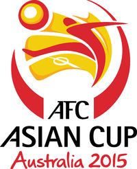

Premier League
 Championship
Championship National League
 FA Cup
FA Cup.png) Women Championship
Women Championship Primera Division
Bundesliga
International Champions Cup
Fifa Club Worldcup
Asian Cup
 Fifa Club Worldcup
Fifa Club Worldcup  Fifa Club Worldcup
Fifa Club Worldcup  Asian Cup
Asian Cup  Championship FA Cup Women ChampionshipFifa Club Worldcup Fifa Club Worldcup Asian Cup
Championship FA Cup Women ChampionshipFifa Club Worldcup Fifa Club Worldcup Asian Cup The Premier League is an English professional league for men's association football clubs. At the top of the English football league system, it is the country's primary football competition. Contested by 20 clubs, it operates on a system of promotion and relegation with the English Football League
(EFL; known as "The Football League" before 2016–17). Welsh clubs that compete in the English football league system can also qualify.

The Football League Championship, which was introduced for the 2004–05 season, was previously known as the Football League First Division (1992–2004), and before that was known as Division Two (1892–1992). The winners of the Championship receive the Football League Championship trophy, the same trophy as the old First Division champions were handed prior to the Premier League's inception in 1992.

The National League of Professional Baseball Clubs, known simply as the National League (NL), is the older of two leagues constituting Major League Baseball (MLB) in the United States and Canada, and the world's oldest current professional team sports league. Founded on February 2, 1876, to replace the National Association of Professional Base Ball Players, it is sometimes called the Senior Circuit, in contrast to MLB's other league, the American League, which was founded 25 years later. Both leagues currently have 15 teams. The two league champions of 1903 arranged to compete against each other in the inaugural World Series. After the 1904 champions failed to reach a similar agreement, the two leagues formalized the World Series as an arrangement between the leagues. National League teams have won 48 of the 112 World Series contested from 1903 to 2016. The 2016 National League champions are the Chicago Cubs.

The WWE Raw Women's Championship is a women's professional wrestling championship created and promoted by the American professional wrestling promotion WWE on the Raw brand. It is one of two women's championships for WWE's main roster, along with the SmackDown Women's Championship on the SmackDown brand. The current champion is Bayley, who is in her first reign. Introduced as the WWE Women's Championship on April 3, 2016 at WrestleMania 32, it replaced the Divas Championship and has a unique title history, separate from WWE's original Women's Championship and the Divas Championship. Charlotte Flair, then known simply as Charlotte, was the inaugural champion. As a result of the 2016 draft, the championship became exclusive to Raw with a subsequent rename, and SmackDown created the SmackDown Women's

The 2016–17 FA Cup (also known as the FA Challenge Cup) is the 136th and current edition of the oldest recognised football tournament in the world. It is sponsored by Emirates, and known as the Emirates FA Cup for sponsorship purposes. 736 clubs were accepted into the tournament,[1] and it began with the Extra Preliminary Round on 6 August 2016, and will conclude with the final on 27 May 2017.[2] The winner will qualify for the 2017–18 UEFA Europa League group stage.Premier League side Manchester United were the defending champions, but were eliminated in the quarter-finals by Chelsea. This edition of the FA Cup was the first in which quarter-final matches were played to a result on the day, instead of being subject to replay in case of a draw. However, all four ties were settled without the need for extra time.

A total of 60 teams have competed in La Liga since its inception. Nine teams have been crowned champions, with Real Madrid winning the title a record 32 times and Barcelona 24 times. Real Madrid dominated the championship from the 1950s through the 1980s. From the 1990s onwards, Barcelona (14 titles) and Real Madrid (7 titles) both dominated, though La Liga also saw other champions, including Atlético Madrid, Valencia, and Deportivo de La Coruña. In more recent years, Atlético Madrid has joined a coalition of now three teams dominating La Liga alongside Real Madrid and Barcelona.

The 2016–17 FA Cup (also known as the FA Challenge Cup) is the 136th and current edition of the oldest recognised football tournament in the world. It is sponsored by Emirates, and known as the Emirates FA Cup for sponsorship purposes. 736 clubs were accepted into the tournament,[1] and it began with the Extra Preliminary Round on 6 August 2016, and will conclude with the final on 27 May 2017.[2] The winner will qualify for the 2017–18 UEFA Europa League group stage.Premier League side Manchester United were the defending champions, but were eliminated in the quarter-finals by Chelsea. This edition of the FA Cup was the first in which quarter-final matches were played to a result on the day, instead of being subject to replay in case of a draw. However, all four ties were settled without the need for extra time.

The 2016–17 FA Cup (also known as the FA Challenge Cup) is the 136th and current edition of the oldest recognised football tournament in the world. It is sponsored by Emirates, and known as the Emirates FA Cup for sponsorship purposes. 736 clubs were accepted into the tournament,[1] and it began with the Extra Preliminary Round on 6 August 2016, and will conclude with the final on 27 May 2017.[2] The winner will qualify for the 2017–18 UEFA Europa League group stage.Premier League side Manchester United were the defending champions, but were eliminated in the quarter-finals by Chelsea. This edition of the FA Cup was the first in which quarter-final matches were played to a result on the day, instead of being subject to replay in case of a draw. However, all four ties were settled without the need for extra time.

The 2016–17 FA Cup (also known as the FA Challenge Cup) is the 136th and current edition of the oldest recognised football tournament in the world. It is sponsored by Emirates, and known as the Emirates FA Cup for sponsorship purposes. 736 clubs were accepted into the tournament,[1] and it began with the Extra Preliminary Round on 6 August 2016, and will conclude with the final on 27 May 2017.[2] The winner will qualify for the 2017–18 UEFA Europa League group stage.Premier League side Manchester United were the defending champions, but were eliminated in the quarter-finals by Chelsea. This edition of the FA Cup was the first in which quarter-final matches were played to a result on the day, instead of being subject to replay in case of a draw. However, all four ties were settled without the need for extra time.

The 2016–17 FA Cup (also known as the FA Challenge Cup) is the 136th and current edition of the oldest recognised football tournament in the world. It is sponsored by Emirates, and known as the Emirates FA Cup for sponsorship purposes. 736 clubs were accepted into the tournament,[1] and it began with the Extra Preliminary Round on 6 August 2016, and will conclude with the final on 27 May 2017.[2] The winner will qualify for the 2017–18 UEFA Europa League group stage.Premier League side Manchester United were the defending champions, but were eliminated in the quarter-finals by Chelsea. This edition of the FA Cup was the first in which quarter-final matches were played to a result on the day, instead of being subject to replay in case of a draw. However, all four ties were settled without the need for extra time.